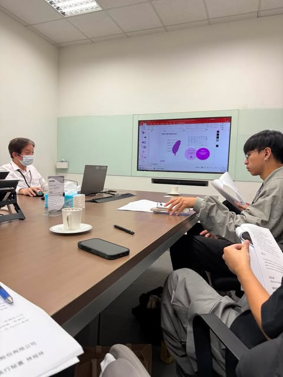

01
自我介紹
就是自我介紹,ya。
- 學校
- 國立聯合大學
- 主修
- 資訊管理學系
- 興趣
- 網頁設計、資料分析、系統開發
02
教育背景
網頁程式設計 / 資料庫管理 / 專案管理
03
經驗和實習
列出資管領域或其他相關領域的實習、工作、志工或團隊經驗。
經驗項目一
python設計課,做釣蝦市場的秤斤計算
經驗項目二
資料庫程式設計,做購物車系統
04
專業技能
可用技能評級展示程式語言、資料庫管理、網頁開發與專案管理能力。
HTML / CSS
JavaScript
Python
SQL / Database
PHP
Java
05
專案作品
展示學期間完成的獨立或團隊項目，包含說明、技術細節與成果連結。
06
文章
撰寫對資管或科技領域的觀點，以圖文並茂方式展現專業素養與表達能力。
AI 與資訊管理的未來應用
這裡可放一篇短文，說明你對資料分析、人工智慧、資訊系統或網頁技術的觀察與想法。
07
獲獎與榮譽
- 學術獎學金 / 競賽成就
- 資管領域相關獎項
- 校內外榮譽或活動紀錄
08
參與活動照片
放置你參與活動、競賽、社團或團隊合作的照片與簡短說明。

09
聯絡資訊
Email: a0958502105@gmail.com
GitHub Pages: https://github.com/nana-iilove/html_final/